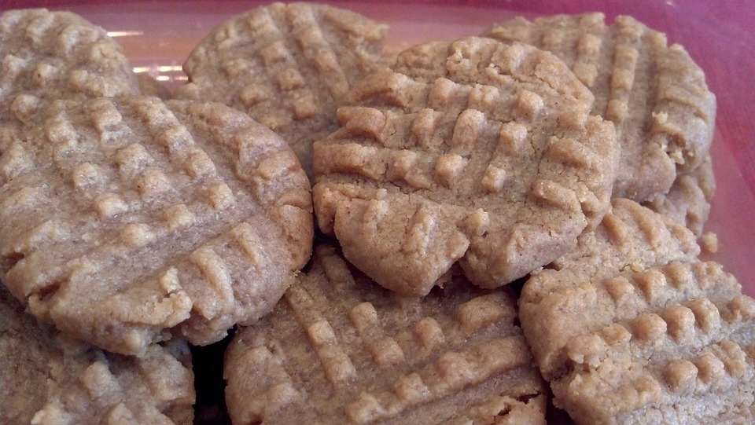

Peanut Butter Cookies Recipe

Description:
Peanut butter cookies are always a hit.
Ingredients:
- 250g of white granulated sugar
- 113g of butter, at room temperature
- 1 egg
- 250g of smooth peanut butter
-
- 940mL of vanilla extract
-
- 2.8g of salt
- 3.5g of baking soda
- 192g of all-purpose flour
Steps
- Preheat the oven to 190ºC on a regular bake setting.
- Line 2 oven trays with parchment paper.
- Cream 200g of white granulated sugar and 113g of room temperature butter together.
- Beat 1 egg into the butter and sugar mixture.
- Mix in 1 cup of smooth peanut butter and ALL the vanilla extract.
- Add the salt, baking soda, and all-purpose flour to the bowl.
- Roll the dough into 2.5cm balls.
- Roll the cookie dough balls in 50g of white granulated sugar.
- Place the cookie dough balls on the oven trays.
- Flatten each cookie dough ball with a fork.
- Bake the cookies in the oven for 12-15 minutes.
- Let the cookies cool on the tray for 3 minutes.
- Enjoy!